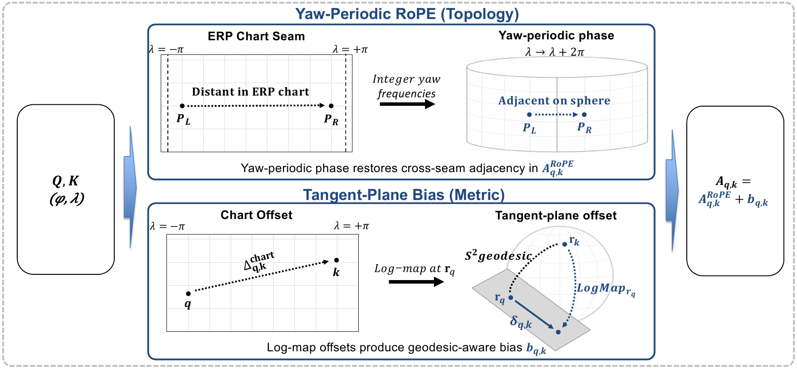
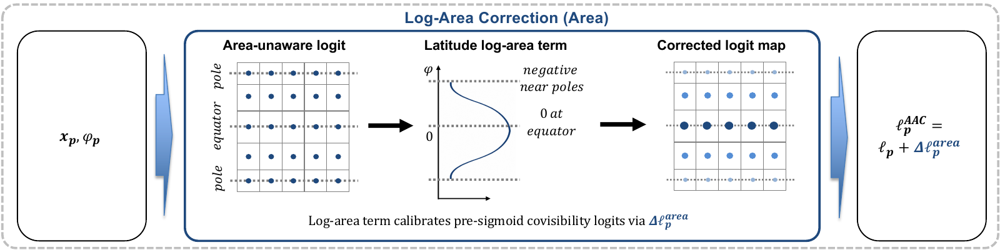
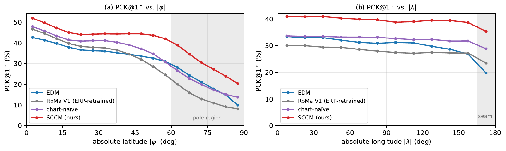

ACCV 2026
1Kakao Mobility Corp.2Korea University✉ Corresponding author
Equirectangular projection (ERP) is the standard representation for 360° imagery, and robust dense feature matching on ERP underpins panoramic stereo, view synthesis, and omnidirectional SLAM. Dense matchers trained on flat images degrade systematically on ERP because the chart introduces three coupled distortions—topological, metric, and area—that standard coarse matching and visibility estimation do not explicitly model. We show that correcting the three distortions at the coarse-stage interfaces where they arise—pairwise distortions in attention, per-pixel distortion in covisibility gating—improves PCK@1° from 0.229 to 0.275 on Matterport3D under a fixed coarse scaffold, with the refiner architecture unchanged—our central result.
Concretely, SCCM (Spherically Consistent Coarse Matching) augments a chart-naïve cross-attention/dual-softmax coarse matcher with two sphere-derived priors: Spherical Positional Attention (SPA) pairs a yaw-periodic RoPE (topology) with a tangent-plane bias (metric), and Area-Aware Covisibility (AAC) applies a pre-sigmoid log-area correction (area). The chart-naïve scaffold serves as a controlled reference, separating the scaffold-replacement effect from the spherical-prior effect. Instantiated in the RoMa V1 framework with the same frozen encoder, refiner architecture, and loss, SCCM also outperforms the ERP-native EDM (0.163) and an ERP-retrained RoMa V1 (0.198) under a unified ERP dense matching protocol, while perspective-trained matchers largely fail on ERP.
ERP distorts the sphere in three ways. The left and right image edges are neighbours on the sphere (topology); equal pixel offsets span different angles at different latitudes (metric); polar pixels cover far less of the sphere than equatorial ones (area). The first two concern pairs of locations, so SCCM corrects them in the coarse attention logits. The third concerns single pixels, so it is corrected in the covisibility gate.
Drag the latitude from the south pole (−90°) to the north pole (+90°). A window of fixed pixel size on the ERP image covers a patch of the sphere that shrinks with cosφ.
The tangent-plane bias in SPA accounts for this stretch in attention; the log-area term in AAC accounts for the shrinking area in the covisibility gate.

Integer longitude frequencies make the relative phase exactly 2π-periodic, so tokens on either side of the ERP seam stay adjacent.
The planar chart offset is replaced by the spherical log-map offset in the query's tangent plane, giving a geodesic-aware attention bias.

A log-area term derived from the ERP area element, α log cosφ, is added to the covisibility logit before the sigmoid, down-weighting pixel-overrepresented polar candidates.
| Method | Matterport3D indoor | Stanford2D3D indoor, zero-shot | Holo360D outdoor | |||
|---|---|---|---|---|---|---|
| PCK@1°↑ | MAE°↓ | PCK@1°↑ | MAE°↓ | PCK@1°↑ | MAE°↓ | |
| RoMa V2 perspective, zero-shot | 0.040 | 36.10 | 0.043 | 42.15 | – | – |
| SphereGlue ERP, sparse | 0.028 | 64.50 | 0.034 | 67.96 | – | – |
| EDM ERP, released weights | 0.163 | 16.78 | 0.104 | 35.70 | – | – |
| RoMa V1 retrained on ERP | 0.198 | 6.60 | 0.167 | 17.80 | 0.322 | 5.66 |
| Chart-naïve scaffold ours, no sphere priors | 0.229 | 5.68 | 0.179 | 18.86 | 0.331 | 5.02 |
| SCCM | 0.275 | 5.36 | 0.229 | 17.09 | 0.357 | 4.94 |
Angular error on the unit sphere. Matterport3D (indoor): 15,682 test pairs. Stanford2D3D (indoor): 8,744 pairs, Matterport3D checkpoints used as is. Holo360D (outdoor, in-the-wild): 8,000 pairs, each model trained from its Matterport3D checkpoint under one protocol. Full metrics are in the paper.
| Configuration | PCK@1°↑ | PCK@5°↑ | MAE°↓ | Median°↓ |
|---|---|---|---|---|
| Chart-naïve scaffold | 0.229 | 0.769 | 5.68 | 2.23 |
| control: EDM absolute positional encoding | 0.224 | 0.756 | 5.97 | 2.31 |
| control: standard RoPE | 0.236 | 0.764 | 6.79 | 2.17 |
| + Yaw-periodic RoPE | 0.267 | 0.796 | 5.87 | 1.93 |
| + Tangent-plane bias (= SPA) | 0.266 | 0.799 | 5.58 | 1.95 |
| + Log-area correction (= SCCM) | 0.275 | 0.806 | 5.36 | 1.88 |
All rows share one training protocol. The scaffold → SCCM margin reproduces on three training seeds (+4.6 / +5.3 / +4.9 pp PCK@1°).

| Method | Pose AUC@5°↑ | Pose AUC@20°↑ | Recon. F@10cm↑ | Recon. Acc. (m)↓ |
|---|---|---|---|---|
| EDM | 7.97 | 29.51 | 27.5 | 1.452 |
| RoMa V1 retrained on ERP | 11.12 | 47.42 | 30.7 | 0.884 |
| Chart-naïve scaffold | 13.66 | 51.76 | 32.7 | 0.787 |
| SCCM | 17.41 | 55.09 | 35.5 | 0.772 |
11,574 test pairs where every method yields at least 200 confident matches. Reconstruction triangulates matches under the ground-truth pose.
Ten Matterport3D (indoor) test pairs from different scenes, selected to show the difference clearly (illustrative, not a random sample). Ground truth back-projects the source panorama with the reference depth; EDM and SCCM triangulate their own dense matches under the ground-truth pose. The three panels share one viewpoint.
@inproceedings{lee2026sccm,
title = {{SCCM}: Spherically Consistent Coarse Matching
for {ERP} Dense Feature Correspondence},
author = {Lee, Gyeonggwan and Im, Eunsoo and
Hong, Seunghwan and Suh, Junghun},
booktitle = {Asian Conference on Computer Vision (ACCV)},
year = {2026}
}